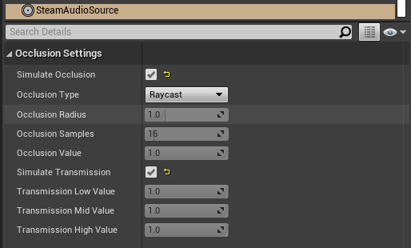

Steam Audio Source¶
Provides options for controlling how occlusion and sound propagation are simulated for an audio source.
Must be attached to an actor containing an Audio component (if using Unreal’s built-in audio engine) or an FMOD Audio component (if using FMOD Studio).
- Simulate Occlusion
If checked, ray tracing will be used to determine how much of the source is occluded.
- Occlusion Type
Specifies how rays should be traced to model occlusion.
Raycast. Trace a single ray from the listener to the source. If the ray is occluded, the source is considered occluded.
Volumetric. Trace multiple rays from the listener to the source based on the Occlusion Radius setting. The proportion of rays that are occluded determine how much of the direct sound is considered occluded. Transmission calculations, if enabled, are only applied to the occluded portion of the direct sound.
- Occlusion Radius
The apparent size of the sound source. The larger the source radius, the larger an object must be in order to fully occlude sound emitted by the source.
- Occlusion Samples
The number of rays to trace from the listener to various points in a sphere around the source. Only used if Occlusion Type is set to Volumetric. Increasing this number results in smoother transitions as the source becomes more (or less) occluded. This comes at the cost of increased CPU usage.
- Occlusion Value
The occlusion attenuation value. Only used if Simulate Occlusion is unchecked. 0 = sound is completely attenuated, 1 = sound is not attenuated at all.
Only available if using Unreal’s built-in audio engine.
- Simulate Transmission
If checked, ray tracing will be used to determine how much of the sound is transmitted through occluding scene geometry.
- Transmission Low
The low frequency (up to 800 Hz) EQ value for transmission. Only used if Simulate Transmission is unchecked. 0 = low frequencies are completely attenuated, 1 = low frequencies are not attenuated at all.
Only available if using Unreal’s built-in audio engine.
- Transmission Mid
The middle frequency (800 Hz to 8 kHz) EQ value for transmission. Only used if Simulate Transmission is unchecked. 0 = middle frequencies are completely attenuated, 1 = middle frequencies are not attenuated at all.
Only available if using Unreal’s built-in audio engine.
- Transmission High
The high frequency (8 kHz and above) EQ value for transmission. Only used if Simulate Transmission is unchecked. 0 = high frequencies are completely attenuated, 1 = high frequencies are not attenuated at all.
Only available if using Unreal’s built-in audio engine.
- Max Transmission Surfaces
The maximum number of surfaces, starting from the closest surface to the listener, whose transmission coefficients will be considered when calculating the total amount of sound transmitted. Increasing this value will result in more accurate results when multiple surfaces lie between the source and the listener, at the cost of increased CPU usage.
- Simulate Reflections
If checked, reflections reaching the listener from the source will be simulated.
- Reflections Type
Specifies how reflections should be simulated for this source.
Realtime. Rays are traced in real-time, and bounced around the scene to simulate sound reflecting from the source and reaching the listener. This allows for smooth variations, and reflections off of dynamic geometry, at the cost of significant CPU usage.
Baked Static Source. The source is assumed to be static, and the listener position is used to interpolate reflected sound from baked data. This results in relatively low CPU usage, but cannot model reflections off of dynamic geometry, and requires more memory and disk space.
Baked Static Listener. The listener is assumed to be static, and the source position is used to interpolate reflected sound from baked data. This results in relatively low CPU usage, but cannot model reflections off of dynamic geometry, and requires more memory and disk space.
- Current Baked Source
If Reflections Type is set to Baked Static Source, the position and orientation of the actor specified in this field will be used as the position and orientation of the source.
- Pathing
If checked, shortest paths taken by sound as it propagates from the source to the listener will be simulated.
- Pathing Probe Batch
When simulating pathing, the baked data stored in this probe batch will be used to look up paths from the source to the listener.
- Path Validation
If checked, each baked path from the source to the listener is checked in real-time to see if it is occluded by dynamic geometry. If so, the path is not rendered.
- Find Alternate Paths
If checked, if a baked path from the source to the listener is found to be occluded by dynamic geometry, alternate paths are searched for in real-time, which account for the dynamic geometry.